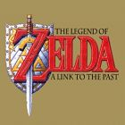
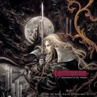
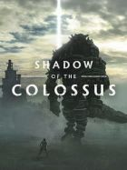
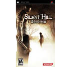

Los Mejores Juegos de Aventura

The Legend of Zelda: A Link to the Past
Obra maestra incontestable de la historia del software de entretenimiento. Link to the Past trata sobre la gran aventura de Link en busca de la Tri-Force, que le lleva a recorrer Hyrule en todas sus direcciones, y dimensiones.Plataforma SNES | SNES | Género Acción, RPG, Aventura

Castlevania: Symphony of the Night
Tomamos el papel de Alucard, vástago de Vlad Tepes, en una aventura con tintes roleros en la que nos enfrentaremos a peligros de toda clase en el mítico castillo Castlevania. Reedición en Xbox Live Arcade del más clásico Castlevania de la historia. Redescubre el mundo de Castlevania con uno de sus juegos innovadores originales y con música y gráficos de renombre.

Shadow of the Colossus
Shadow of the Colossus, desarrollado por Bluepoint Games y editado por Sony para PlayStation 4, es un remake del clásico título del Team ICO de PlayStation 2 con un apartado audiovisual totalmente actualizado.Te conducirá por un viaje impresionante a través de tierras antiguas para buscar bestias gigantescas.

Silent Hill: Origins
Silent Hill siempre ha sido el pueblo maldito que a muchos nos gusta, pero que nadie querría visitarlo en la vida real, hoy, está de regreso y en versión para llevar, para cuando uno quiere a reflexionar sobre el cielo y el infierno, en el recreo y hasta en el tráfico. El proyecto que en un principio sería una re edición del de la versión de PSOne, fue cambiando poco a poco hasta terminar por convertirse en un título completamente original, el cual, no es solo una historia alterna, si no que es la historia sobre como llegó a ser Silent Hill el pueblo maldito del cual nadie puede salir. Qué mejor oportunidad para comenzar una nueva aventura en Silent Hill, cuando un conductor de tráiler en una noche lluviosa pasaba cerca del lugar, cuando de pronto se ve obligado a detenerse abruptamente por una aparición que lo conduce a una casa en llamas, de la cual rescata a una niña, solo para después desmayarse y despertar en un hospital que nunca es lo que parece.
Top 10 juegos de Aventura para android
Espero y le guste mi continido, no olviden que esta pag apenas esta en matenimiento, la cual esto seria un beta no olvides dejarme tu sukulento like.